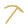
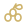
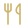
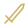
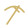
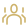

Helpy · original glyphs
64 original scalable vectors · RuneSchema theme tint · MIT · not game artwork. The game's native power-level badge remains separate.
TravelBossesDungeonsChestsFishing spots
MiningTreesRunecraftingPlantsQuestsCharactersCreaturesLore and booksLandmarksOreStoneCoalGemLogStumpLeafHerbFlower
BerriesMushroomsCropsFishWaterFeathersHideBonesMeatHealthStaminaSpecial power
FoodThirstRestPower level fallbackDefence
SwordAxe
PickaxeBowStaffHelmetBody armourLeg armourGlovesBoots
PartyTeleportRecallHarvestTimerRespawnCacheRefreshSearchDownloadImportExportEquipWarning